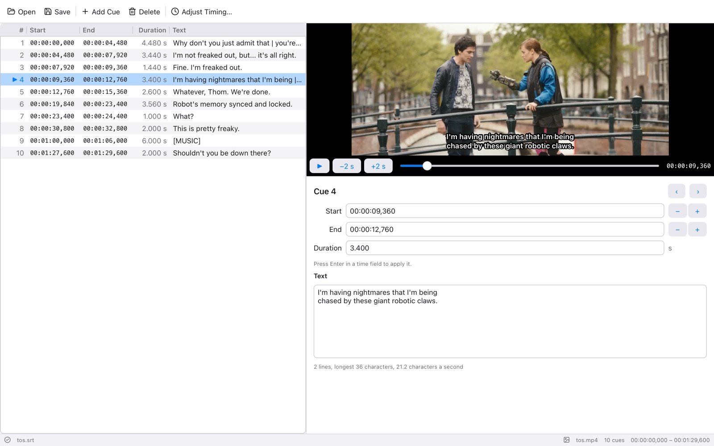
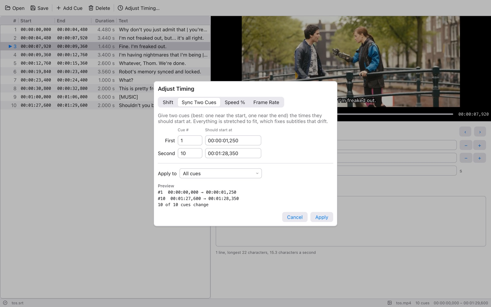
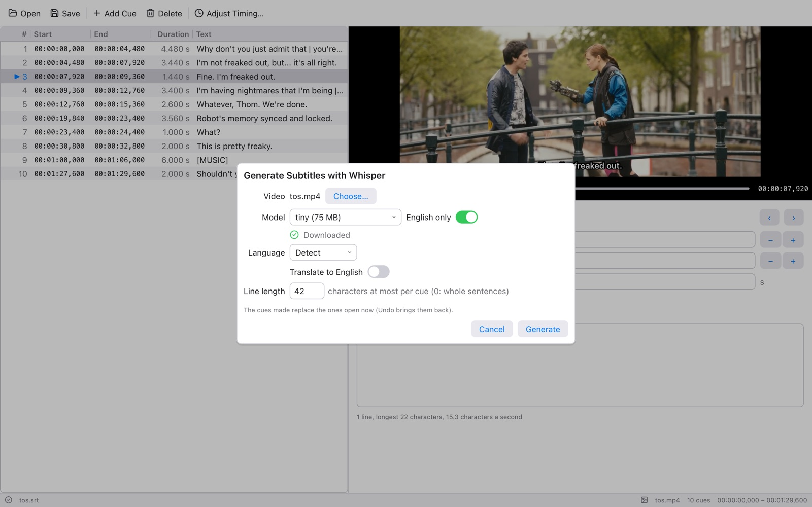

Edit against the picture
The video plays beside the cues, with the subtitles drawn over it as a viewer sees them. Select a cue and the video goes there; the cue playing is marked in the list.
Free · Open source · macOS, Windows, Linux
Subtle is an SRT editor with the video beside it. Fix a line, nudge it to the frame, and when the whole file is off, shift, sync or retime every cue in one step. No video to subtitle yet? Make the first draft from speech with Whisper.
Free · No account

The video plays beside the cues, with the subtitles drawn over it as a viewer sees them. Select a cue and the video goes there; the cue playing is marked in the list.
Set a cue's start or end to the video's time with one key, nudge by 100 ms, or add a cue where the video is. Type times, durations, or drag nothing at all.
Shift every cue, sync two cues to where they belong and stretch the rest, change speed by a percentage, or convert between frame rates, for all cues or just some.
Whisper listens to the video and writes the cues, split into subtitle-length lines: dozens of languages, or translated to English. It runs on your computer; nothing is uploaded.
Split a cue after any word at the time you choose, merge cues, sort them, and fix overlaps. Spell check goes through every cue, with your own dictionary.
Each cue shows its lines, its longest line and its characters a second, and a red number marks a cue that ends before it starts or runs into the next.
Subtitles from another release drift: right at the start, seconds off by the end. Tell Subtle where the first and the last cue should start, and it stretches every time between them. The preview shows what changes before you apply it, and Undo takes it back.
For subtitles that are off by the same amount all through, Shift does it, or Shift All So Selected Cue Starts Here with the video paused on the right frame. Speed % and Frame Rate handle the 23.976 ↔ 25 fps PAL speed-up.

Subtle uses whisper.cpp to transcribe the video's dialogue into cues, at most 42 characters a line, split on words. Pick a model from tiny (fast) to large (most accurate) and download it from the same window, choose the language or let it detect it, or translate to English.
It runs whisper.cpp and ffmpeg where they're installed (on a Mac: brew install whisper-cpp ffmpeg), and the sound never leaves your computer.

Cmd on macOS is Ctrl on Windows and Linux. The single keys work when you're not typing in a field.
| Space | Play or pause | J L | Back or forward 2 s (with Shift, ½ s) |
| P | Play the selected cue | G | Go to the cue at the video's time |
| Cmd [ | Set the start to the video's time | Cmd ] | Set the end to the video's time |
| Cmd K | Split the cue | Cmd M | Merge the selected cues |
| Cmd T | Adjust timing | Alt Cmd ← → | Nudge the selection 100 ms (with Shift, 1 s) |
| Cmd ; | Spell check | Cmd Z | Undo anything |
Subtle is free software under the GNU LGPL 2.1 or later. Its video preview is Reel's: every container and decoder, H.264, HEVC, AV1, VP9 and the rest, written in Tessel, with no FFmpeg inside. The whole app is one native program of a few megabytes.
Subtle is free. There's no account and no sign-in.
On Windows you'll see a warning. Subtle for Windows isn't code-signed yet, so SmartScreen says it is from an unknown publisher the first time. Click More info, then Run anyway. Check the download against its SHA-256 if you want to be sure it's ours.
On macOS, open the disk image and drag Subtle to Applications. It's signed and notarized by Apple.
On Linux, the AppImage is one file: make it executable (chmod +x Subtle-*.AppImage) and open it. On Debian and Ubuntu, the .deb puts Subtle in your app menu instead.
sudo apt install wamerican)